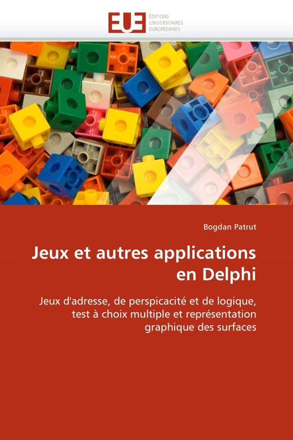

Jeux et autres applications en Delphi
Published by : Editions Universitaires européennes
Writed by : Bogdan Patrut
Published date : 03/01/2011
ISBN-10 : 613155580X
ISBN-13 : 9786131555800
Language :  Français
Français
About Jeux et autres applications en Delphi
L'environnement de programmation Delphi permet la réalisation de programmes à fonctionner en Windows, avec des interfaces de type Windows, basés sur le langage de programmation Object Pascal. L'interface de l'application est facilement mise en oeuvre en Delphi, mais la conception du code comporte plus de difficultés de la part du programmeur, car cela implique la conception et la mise en oeuvre, en langage Object Pascal, des algorithmes efficaces pour les problèmes en cause. Ce livre est une collection d'applications dans l'environnement de programmation visuelle Delphi, développé et commercialisé par la société Borland (Inprise, Embarcadero). Les applications faisant partie du présent ouvrage traitent essentiellement de la question de jeux d'adresse, de perspicacité et de logique, un chapitre traitant des tests à choix multiple et un autre s'occupant de la représentation graphique des surfaces.
Where to buy ?
This book has the ISBN13 "9786131555800".
If it is still available for sale, you can order it in your favorite bookstore, by its publisher or online at
Amazon CA,
Amazon FR,
Amazon JP,
Amazon UK or
Amazon USA depending on your country.